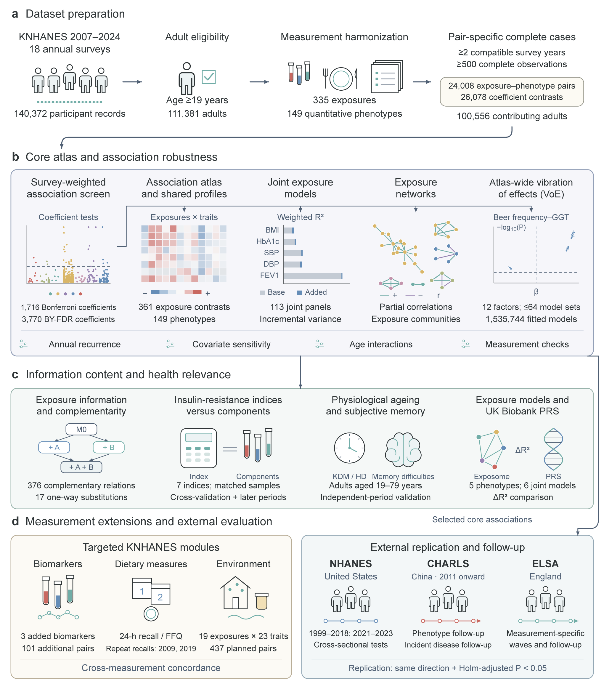

The KNHANES Phenome–Exposome Atlas

View Figure 1 at full resolution
Overview
This atlas presents associations between 335 exposure indicators and 149 quantitative phenotypes in Korean adults aged 19 years and older, using KNHANES 2007–2024. Browse 24,008 exposure–phenotype pairs and 26,078 coefficient contrasts from survey-weighted analyses.
The study follows 140,372 participant records through adult eligibility and measurement harmonization to 100,556 contributing adults. It examines association robustness, exposure complementarity, insulin-resistance indices, physiological ageing, subjective memory and external evaluation in NHANES, CHARLS and ELSA.
Using the atlas
Choose a phenotype, exposure or exposure group from the navigation bar. Search the selector, switch plot tabs, sort and search the summary table, or download the results. Exposure and phenotype catalogs describe the available variables.
The Vibration of effects module explores the sensitivity of all 24,008 pairs to alternative adjustment sets, covering 26,078 coefficient contrasts and 1,535,744 fitted models. Select an association to inspect model estimates, covariate contributions and robustness.
Analysis definitions
Models incorporate survey weights, strata and primary sampling units. Coefficients describe standardized outcomes; continuous exposures use the log10 scale, ordinal exposures retain rank scores, and categorical exposures retain their reference comparisons.
Bonferroni and Benjamini–Yekutieli (BY) correction use the original 26,078 coefficient tests. Pair-level ΔR² is the additional survey-weighted variance explained by the full exposure term. The R² distribution counts each pair once, using its overall-exposure significance family of 24,008 tests.
Effect-size boxplots summarize absolute standardized coefficients by exposure group. Model comparison displays base-model and fully adjusted coefficients.
Data and software
Results and figure downloads
Summary results
Study figures
- Figure 1 · Study workflow
- Figure 2 · Association atlas
- Figure 3 · Variance explained
- Figure 4 · Association matrix
- Figure 5 · Exposure networks
- Extended Data 2 · Annual recurrence
- Extended Data 3 · Adjustment models
- Extended Data 4 · Vibration of effects
- Extended Data 5 · Measurement concordance
- Extended Data 7 · Age interactions
- Extended Data 8 · Association profiles